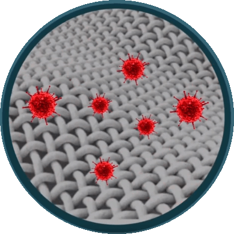
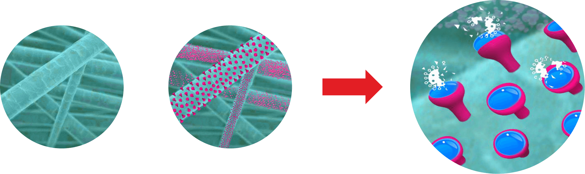

Microbes (Virus, Bacteria, Fungus) can remain active on Fabric for many days. Virus can spread from Cough, Sneeze as Aerosol can stick to the Fabric.
Unlike other products available in the market, Virus Kavach technology offers fast and durable antimicrobial performance. It is made up of non-toxic, naturally occuring materials. This Technology is based on EPA Approved and Eco Friendly Ingredients. Coating provides self disinfecting Antimicrobial layer on the Fabric. Coating can be “ReCharged” after every wash cycle so efficacy does not diminish.
Electron Microscope (SEM) images of Control (non coated cotton) and Virus Kavach treated after loading with 200 µL of 106 CFU of S. aureus